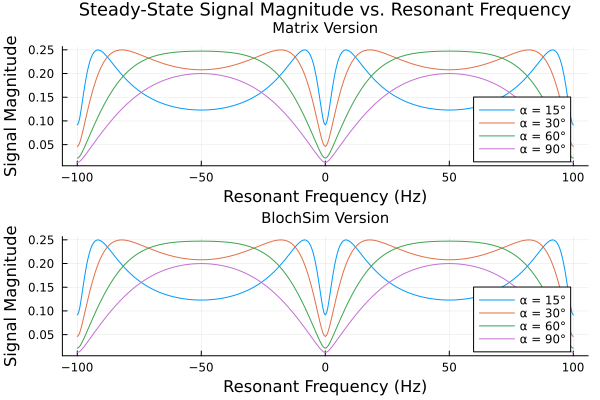
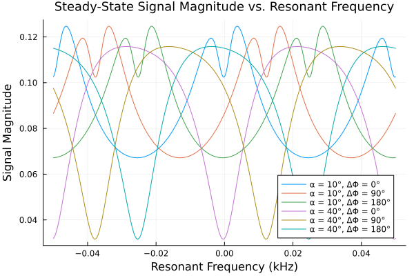
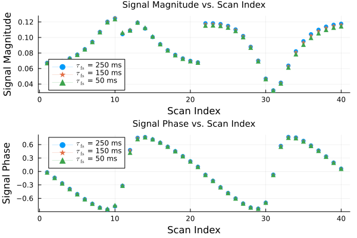

bSSFP
This page illustrates using the Julia package BlochSim to calculate MRI signals for balanced steady-state free precession (bSSFP) pulse sequences.
This demo facilitates understanding bSSFP sequences, multi-compartment spins, and myelin water exchange.
This demo recreates Figure 3 from [1] and Figure 2 from [2].
References
[1] Hargreaves, B., Vasanawala, S., Pauly, J., & Nishimura, D. (2001). Characterization and reduction of the transient response in steady‐state MR imaging. MRM 46(1), 149-158.
[2] Murthy, N., Nielsen, J., Whitaker, S., Haskell, M., Swanson, S., Seiberlich, N., & Fessler, J. (2022). Quantifying myelin water exchange using optimized bSSFP sequences. Proc. Intl. Soc. Mag. Res. Med (p. 2068).
[3] Hinshaw, W. S. (1976). Image formation by nuclear magnetic resonance: the sensitive‐point method. J. of Applied Physics, 47(8), 3709-21.
[4] Whitaker, S. T., Nataraj, G., Nielsen, J. F., & Fessler, J. A. (2020). Myelin water fraction estimation using small‐tip fast recovery MRI. MRM 84(4), 1977-90.
This page comes from a single Julia file: 01-overview.jl.
You can access the source code for such Julia documentation using the 'Edit on GitHub' link in the top right. You can view the corresponding notebook in nbviewer here: 01-overview.ipynb, or open it in binder here: 01-overview.ipynb.
Setup
First we add the Julia packages that are need for this demo. Change false to true in the following code block if you are using any of the following packages for the first time.
if false
import Pkg
Pkg.add([
"BlochSim"
"LaTeXStrings"
"LinearAlgebra"
"Plots"
])
endTell this Julia session to use the following packages for this example. Run Pkg.add() in the preceding code block first, if needed.
using BlochSim: Spin, SpinMC, InstantaneousRF, excite, freeprecess
using InteractiveUtils: versioninfo
using LaTeXStrings: latexstring
using LinearAlgebra: I
using MIRTjim: prompt
using Plots: plot, plot!, default
default(titlefontsize = 10, markerstrokecolor = :auto, label="")The following line is helpful when running this file as a script; this way it will prompt user to hit a key after each figure is displayed.
isinteractive() || prompt(:draw);Define some useful helper functions.
Hz_to_kHz(Δf_Hz) = Δf_Hz * 10^(-3) # convert frequencies in Hz to kHz
kHz_to_Hz(Δf_kHz) = Δf_kHz * 10^(3) # convert frequencies in kHz to HzkHz_to_Hz (generic function with 1 method)The bSSFP pulse sequence in Figure 2 in [1] starts with a RF pulse, then
ais at time TEbis TR-TE later, right before next RF pulsecis immediately after the next RF pulsedis TE after that next RF pulse
We use this to generate Figure 3 in [1] in two different ways. The RF excitation is repeated periodically and, in steady-state, the magnetization at point a is the same as at point d.
Method 1: Use matrices
Use Equations 1 and 2 and Appendix A from [1]
Calculate the steady-state value at point d using the method from [1] using Equations 1 and 2 and Appendix A.
"""
bssfp_matrix(α_deg, TR_ms, TE_ms, mo, T1_ms, T2_ms, Δf_kHz=0)
Return steady-state magnetization signal value
at the echo time
for a bSSFP sequence
using method of
[Hargreaves et al., MRM 2001](https://doi.org/10.1002/mrm.1170).
# In
- `α_deg` flip angle of RF pulse (degrees)
- `TR_ms` repetition time (ms)
- `TE_ms` echo time (ms)
- `mo` initial condition for magnetization in the z-direction (constant)
- `T1_ms` MRI tissue parameter for T1 relaxation (ms)
- `T2_ms` MRI tissue parameter for T2 relaxation (ms)
- `Δf_Hz` off-resonance value (Hz)
# Out
- `signal` steady-state magnetization (as a complex number)
"""
function bssfp_matrix(α_deg, TR_ms, TE_ms, mo, T1_ms, T2_ms, Δf_Hz=0)
Δf_kHz = Hz_to_kHz(Δf_Hz) # convert off-resonance value to kHz
M0 = [0; 0; mo] # initial magnetization vector
α_rad = deg2rad(α_deg) # convert flip angle α from degrees to radians
# rotation matrix for RF excitation about the x-axis
R = [1 0 0; 0 cos(α_rad) sin(α_rad); 0 -sin(α_rad) cos(α_rad)]
# free precession matrix
P(τ_ms) = [cos(2π*Δf_kHz*τ_ms) sin(2π*Δf_kHz*τ_ms) 0 ; -sin(2π*Δf_kHz*τ_ms) cos(2π*Δf_kHz*τ_ms) 0 ; 0 0 1]
# matrices for T1 and T2 relaxation over a time τ
C(τ_ms) = [exp(-τ_ms/T2_ms) 0 0 ; 0 exp(-τ_ms/T2_ms) 0 ; 0 0 exp(-τ_ms/T1_ms)]
D(τ_ms) = (I - C(τ_ms)) * [0 ; 0 ; mo]
# matrices for various values of τ
P1 = P(TE_ms)
P2 = P(TR_ms - TE_ms)
C1 = C(TE_ms)
C2 = C(TR_ms - TE_ms)
D1 = D(TE_ms)
D2 = D(TR_ms - TE_ms)
# matrix A and vector b for steady-state calculation
A = P1*C1*R*P2*C2
b = P1*C1*R*D2 + D1
Mss = (I - A) \ b # steady-state magnetization
return complex(Mss[1], Mss[2]) # return the complex signal
end;Method 2: Use BlochSim
"""
bssfp_blochsim(α_deg, TR_ms, TE_ms, mo, T1_ms, T2_ms, Δf_kHz=0)
bssfp_blochsim(α_deg, TR_ms, TE_ms, spin)
Return steady-state magnetization signal value
at the echo time
for a bSSFP sequence
using BlochSim.
See [Hargreaves et al., MRM 2001](https://doi.org/10.1002/mrm.1170).
# In
- `α_deg` flip angle of RF pulse (degrees)
- `TR_ms` repetition time (ms)
- `TE_ms` echo time (ms)
- `mo` initial condition for magnetization in the z-direction (constant)
- `T1_ms` MRI tissue parameter for T1 relaxation (ms)
- `T2_ms` MRI tissue parameter for T2 relaxation (ms)
- `Δf_Hz` off-resonance value (Hz)
# Out
- `signal` steady-state magnetization (as a complex number)
"""
function bssfp_blochsim(α_deg, TR_ms, TE_ms, mo, T1_ms, T2_ms, Δf_Hz=0)
spin = Spin(mo, T1_ms, T2_ms, Δf_Hz) # create a spin
return bssfp_blochsim(α_deg, TR_ms, TE_ms, spin)
end;
function bssfp_blochsim(α_deg, TR_ms, TE_ms, spin::Spin)
α_rad = deg2rad(α_deg) # convert flip angle α from degrees to radians
#=
excite the spin
include RF phase for instantaneous RF because above code flips over x axis
and blochsim flips over -y axis and want to make them consistent
=#
(R,) = excite(spin, InstantaneousRF(α_rad, -π/2))
R = Matrix(R.A)
# put spin through precession/relaxation for various time period values
(PC1_A, PC1_B) = freeprecess(spin, TE_ms)
(PC2_A, PC2_B) = freeprecess(spin, TR_ms-TE_ms)
(PC_TR_A, PC_TR_B) = freeprecess(spin, TR_ms)
# calculate the A and B matrices
A = Matrix(PC1_A)*R*Matrix(PC2_A)
B = Matrix(PC1_A)*R*Vector(PC2_B)+Vector(PC1_B)
# calculate the steady-state magnetization at the echo time
Mss = (I - A) \ B
return complex(Mss[1], Mss[2]) # return the complex signal
end;Recreate Figure 3 from [1] using Methods 1 and 2
TR_ms, TE_ms = 10, 5 # scan parameters
mo, T1_ms, T2_ms = 1, 400, 100 # tissue parameters
num_off_res_values = 401 # array of off-resonance values
Δf_arr_kHz = range(-1/TR_ms, 1/TR_ms, num_off_res_values) # 2 periods
flip_ang_arr_deg = [15, 30, 60, 90] # array of flip angles
num_flip_angles = length(flip_ang_arr_deg);
# array to store calculated results for both plots (methods 1 and 2)
num_plots = 2
sig_arr = zeros(num_flip_angles, num_off_res_values, num_plots)
p_m = plot(title="Matrix Version") # initialize plots
p_b = plot(title="BlochSim Version");Call bssfp_matrix and bssfp_blochsim for various flip angles and off-resonance values
for i in 1:num_flip_angles # iterate over flip angles
α_deg = flip_ang_arr_deg[i]
for j in 1:num_off_res_values # iterate over off-resonance values
Δf_kHz = Δf_arr_kHz[j]
local Δf_Hz = kHz_to_Hz(Δf_kHz) # convert from kHz to Hz
# call both implementations (methods 1 and 2) of bSSFP signal model
signal_matrix = bssfp_matrix(α_deg, TR_ms, TE_ms, mo, T1_ms, T2_ms, Δf_Hz)
signal_blochsim = bssfp_blochsim(α_deg, TR_ms, TE_ms, mo, T1_ms, T2_ms, Δf_Hz)
@assert signal_blochsim ≈ signal_matrix # check!
# save results for methods 1 and 2
sig_arr[i,j,1] = abs(signal_matrix)
sig_arr[i,j,2] = abs(signal_blochsim)
end
# plot results for current flip angle
plot!(p_m, 1000Δf_arr_kHz, sig_arr[i,:,1], label="α = $(α_deg)°")
plot!(p_b, 1000Δf_arr_kHz, sig_arr[i,:,2], label="α = $(α_deg)°")
endPlot results and label axes:
p1 = plot(p_m, p_b, layout = (2,1),
xlabel = "Resonant Frequency (Hz)",
ylabel = "Signal Magnitude",
plot_title = "Steady-State Signal Magnitude vs. Resonant Frequency",
plot_titlefontsize = 12,
)
prompt()Multi-compartment spins and myelin water exchange
Generate Figure 2 from [2] using BlochSim. First define some useful helper functions. These functions put the parameters in the correct format for the multi-compartment spin object constructors.
"""
- in: `f_f` fast fraction (myelin fraction)
- out: `mwf_tuple` tuple with fast and slow fractions
"""
get_mwf_tuple(f_f) = (f_f, 1-f_f)
"""
# In:
- `τ_fs_ms` residence time for exchange from myelin to non-myelin water (ms)
- `f_f` fast fraction (myelin fraction)
# Out:
- `τ_tuple_ms` tuple with fast-to-slow and slow-to-fast residence times
"""
function get_τ_tuple(τ_fs_ms, f_f)
τ_sf_ms = (1-f_f) * τ_fs_ms / f_f
τ_tuple_ms = (τ_fs_ms, τ_sf_ms)
return τ_tuple_ms
end
"""
# In:
- `ΔΦ_rad` RF phase cycling value (radians)
- `Δf_Hz` off-resonance value (Hz)
- `Δf_myelin_Hz` # additional off-resonance value only experienced by myelin water (Hz)
- `TR_ms` repetition time (ms)
# Out:
- `Δf_tuple_Hz` tuple with off-resonance values for fast and slow compartments
[Hinshaw, J. Appl. Phys. 1976](https://doi.org/10.1063/1.323136).
"""
function get_Δf_tuple(ΔΦ_rad, Δf_Hz, Δf_myelin_Hz, TR_ms)
# convert the RF phase cycling value to Hz from radians
ΔΦ_Hz = kHz_to_Hz((ΔΦ_rad)/(2π*TR_ms))
# subtract the RF phase cycling value from the off-resonance value
Δf_RF_Hz = Δf_Hz - ΔΦ_Hz
# add the myelin off-resonance for the myelin term
Δf_myelin_RF_Hz = Δf_RF_Hz + Δf_myelin_Hz
# create and return tuple for the spin object constructor
Δf_tuple_Hz = (Δf_myelin_RF_Hz, Δf_RF_Hz)
return Δf_tuple_Hz
end;Define a function similar to Method 2 above, but for multi-compartment spin objects.
"""
bssfp_blochsim_MC(α_deg, TR_ms, TE_ms, spin_mc, spin_mc_no_rf_phase_fact)
Return steady-state magnetization signal value
at the echo time
for a bSSFP sequence
using BlochSim.
Ref: Murthy, N., Nielsen, J. F., Whitaker, S. T., Haskell, M. W.,
Swanson, S. D., Seiberlich, N., & Fessler, J. A. (2022).
Quantifying myelin water exchange using optimized bSSFP
sequences. In Proc. Intl. Soc. Mag. Res. Med (p. 2068). [2]
# In
- `α_deg` flip angle of RF pulse (degrees)
- `TR_ms` repetition time (ms)
- `TE_ms` echo time (ms)
- 'spin_mc' multi-compartment spin object with RF phase cycling factor
- 'spin_mc_no_rf_phase_fact' multi-compartment spin object without RF phase cycling factor
# Out
- `signal` steady-state magnetization (as a complex number)
"""
function bssfp_blochsim_MC(α_deg, TR_ms, TE_ms, spin_mc, spin_mc_no_rf_phase_fact)
# convert flip angle α from degrees to radians
α_rad = deg2rad(α_deg)
# excite the spin and reshape R to be the correct dimensions for a SpinMC object
(R,) = excite(spin_mc, InstantaneousRF(α_rad))
R = Matrix(R.A)
R = kron(I(2),R)
# precession/relaxation of the spin for TR
(PC_TR_A, PC_TR_B) = freeprecess(spin_mc, TR_ms)
# precession/relaxation of the spin for TE
# assume receiver modulates signal and uses the receiver phase as the RF phase
(PC_TE_A, PE_TE_B) = freeprecess(spin_mc_no_rf_phase_fact, TE_ms)
# calculate A matrix and b vector
A = Matrix(PC_TR_A) * R
b = Vector(PC_TR_B)
Mss = (I - A) \ b # steady-state just before tip down
M = R * Mss # magnetization after tip-down
# steady-state magnetization at the echo time
M = Matrix(PC_TE_A) * M + Vector(PE_TE_B)
return (complex(M[1]+M[4], M[2]+M[5])) # return the complex signal
end;Define variables to be used in the following plots. Values taken from [2] and [4].
mo = 0.77; # initial condition for longitudinal magnetization (constant)
# T1 and T2 values
T1_f_ms = 400 # T1 for fast-relaxing, myelin water compartment
T1_s_ms = 832 # T1 for slow-relaxing, non-myelin water compartment
T1_ms_tuple = (T1_f_ms, T1_s_ms);
T2_f_ms = 20 # T2 for fast-relaxing, myelin water compartment
T2_s_ms = 80 # T2 for slow-relaxing, non-myelin water compartment
T2_ms_tuple = (T2_f_ms, T2_s_ms)
Δf_myelin_Hz = 5.0 # frequency shift of myelin water
f_f = 0.15 # myelin water fraction (MWF), fast fraction
mwf_tuple = get_mwf_tuple(f_f) # tuple with fast and slow relaxing fractions
TR_ms, TE_ms = 20, 4; # scan parametersGenerate plots similar to Figure 3 from [1] but with three different RF phase cycling factor values: (0, 90, and 180 degrees).
For this example, choose one exchange rate:
τ_fs = 50.0 # this will be varied in the next plot
# tuple with fast-to-slow and slow-to-fast residence times
τ_tuple_ms = get_τ_tuple(τ_fs, f_f)
num_samples = 401 # number of samples (resonant frequencies)
flip_ang_arr_deg = [10, 40] # flips angles for example
num_flip_angles = length(flip_ang_arr_deg)
ΔΦ_arr_deg = [0, 90, 180] # RF phase cycling value (degrees)
Δϕ_arr_marker = [:circle :star5 :utriangle]
num_phases = length(ΔΦ_arr_deg);
# array to store results
sig_arr = zeros(num_flip_angles,num_phases,num_samples);
# array with off-resonance values
Δf_arr_kHz = range(-1/TR_ms, 1/TR_ms, num_samples)
p2 = plot(title="Steady-State Signal Magnitude vs. Resonant Frequency",
xlabel = "Resonant Frequency (kHz)",
ylabel = "Signal Magnitude",
titlefontsize=12,
);
for i in 1:num_flip_angles # iterate over flip angles
α_deg = flip_ang_arr_deg[i]
for j in 1:num_phases # iterate over RF phases
ΔΦ_deg = ΔΦ_arr_deg[j]
for k in 1:num_samples # iterate over resonant frequencies
Δf_kHz = Δf_arr_kHz[k]
# convert off-resonance from kHz to Hz before input into function
local Δf_Hz = kHz_to_Hz(Δf_kHz)
# convert inputted RF phase cycling angle from degrees to radians
ΔΦ_rad = deg2rad(ΔΦ_deg)
# get tuple of values incorporating off-resonance and RF phase cycling for both compartments
Δf_tuple_Hz = get_Δf_tuple(ΔΦ_rad, Δf_Hz, Δf_myelin_Hz, TR_ms)
Δf_tuple_Hz_no_rf_phase_fact = get_Δf_tuple(0, Δf_Hz, Δf_myelin_Hz, TR_ms)
# create a spin (with and without RF phase-cycling factor)
spin_mc = SpinMC(mo, mwf_tuple, T1_ms_tuple, T2_ms_tuple, Δf_tuple_Hz, τ_tuple_ms)
spin_mc_no_rf_phase_fact = SpinMC(mo, mwf_tuple, T1_ms_tuple, T2_ms_tuple, Δf_tuple_Hz_no_rf_phase_fact, τ_tuple_ms)
# run the bSSFP blochsim and add to result array
signal = bssfp_blochsim_MC(α_deg, TR_ms, TE_ms, spin_mc, spin_mc_no_rf_phase_fact)
sig_arr[i,j,k] = abs(signal)
end
plot!(p2, Δf_arr_kHz, sig_arr[i,j,:];
label = "α = $(α_deg)°, ΔΦ = $(ΔΦ_deg)°")
end
end
p2
prompt()Recreate Figure 2 (magnitude plot) from [2] and also add the phase plot.
# Initialize the plot:
p_m = plot(title="Signal Magnitude vs. Scan Index", ylabel = "Signal Magnitude")
p_p = plot(title="Signal Phase vs. Scan Index", ylabel = "Signal Phase")
num_scans = 40 # number of different scans
scan_idx = range(1,num_scans,num_scans)
flip_ang_arr_deg = [10.0, 40.0] # flip angles for plot
num_flip_angles = length(flip_ang_arr_deg)
Δf_Hz = 0.0 # set off-resonance to zero
tau_arr_ms = [250, 150, 50] # array of exchange values
tau_arr_marker = [:circle, :star5, :utriangle]
num_taus = length(tau_arr_ms)
sig_arr = zeros(num_scans,num_taus) # arrays to store results
sig_arr_phase = zeros(num_scans,num_taus)
ΔΦ_design_deg = ( # designed RF phase cycling increments
[-176.4, -159.5, -142.1, -124.4, -107.6, -90.54, -73.62, -56.13, -39.41, -22.52, -5.272, 11.63, 28.93, 45.76, 63.08, 79.91, 96.97, 113.9, 131.3, 148.5, 166.1],
[-168.8, -150.3, -130.1, -111.5, -93.19, -74.18, -54.68 , -37.15, -18.01, 1.342, 18.82, 38.64, 57.88, 76.48, 95.2, 113.3, 133.3, 153.1, 172.1],
)
curr_scan = 1
for j in 1:num_taus # iterate over exchange values
local τ_fs = tau_arr_ms[j]
local τ_tuple_ms = get_τ_tuple(tau_arr_ms[j], f_f)
tau_marker = tau_arr_marker[j]
for k in 1:num_flip_angles # iterate over flip angles
α_deg = flip_ang_arr_deg[k]
# different RF phases for different flip angles - from Figure 1 in [2]
local ΔΦ_arr_deg = ΔΦ_design_deg[k]
for i in 1:length(ΔΦ_arr_deg) # iterate over RF phases
ΔΦ_deg = ΔΦ_arr_deg[i]
# convert RF phase cycling angle from degrees to radians
ΔΦ_rad = deg2rad(ΔΦ_deg)
# tuple of values incorporating off-resonance and RF phase cycling for both compartments
Δf_tuple_Hz = get_Δf_tuple(ΔΦ_rad, Δf_Hz, Δf_myelin_Hz, TR_ms)
Δf_tuple_Hz_no_rf_phase_fact = get_Δf_tuple(0, Δf_Hz, Δf_myelin_Hz, TR_ms)
# create a spin (with and without RF phase-cycling factor)
spin_mc = SpinMC(mo, mwf_tuple, T1_ms_tuple, T2_ms_tuple, Δf_tuple_Hz, τ_tuple_ms)
spin_mc_no_rf_phase_fact = SpinMC(mo, mwf_tuple, T1_ms_tuple, T2_ms_tuple, Δf_tuple_Hz_no_rf_phase_fact, τ_tuple_ms)
# run the bSSFP blochsim and add to result array
signal = bssfp_blochsim_MC(α_deg, TR_ms, TE_ms, spin_mc, spin_mc_no_rf_phase_fact)
sig_arr[curr_scan,j] = abs(signal)
sig_arr_phase[curr_scan,j] = angle(signal)
global curr_scan += 1
end
end
global curr_scan = 1
plot!(p_m, scan_idx,sig_arr[:,j], linewidth=0, markershape=tau_marker,
label = latexstring("\$τ_{\\mathrm{fs}}\$ = $τ_fs ms"))
plot!(p_p, scan_idx,sig_arr_phase[:,j], linewidth=0, markershape=tau_marker,
label = latexstring("\$τ_{\\mathrm{fs}}\$ = $τ_fs ms"))
end
# plot results and label axes
p3 = plot(p_m, p_p, layout = (2,1), xlabel = "Scan Index")
prompt()Reproducibility
This page was generated with the following version of Julia:
using InteractiveUtils: versioninfo
io = IOBuffer(); versioninfo(io); split(String(take!(io)), '\n')11-element Vector{SubString{String}}:
"Julia Version 1.11.6"
"Commit 9615af0f269 (2025-07-09 12:58 UTC)"
"Build Info:"
" Official https://julialang.org/ release"
"Platform Info:"
" OS: Linux (x86_64-linux-gnu)"
" CPU: 4 × AMD EPYC 7763 64-Core Processor"
" WORD_SIZE: 64"
" LLVM: libLLVM-16.0.6 (ORCJIT, znver3)"
"Threads: 1 default, 0 interactive, 1 GC (on 4 virtual cores)"
""And with the following package versions
import Pkg; Pkg.status()Status `~/work/BlochSim.jl/BlochSim.jl/docs/Project.toml`
[6e4b80f9] BenchmarkTools v1.6.0
[5c0f8cbe] BlochSim v0.7.1 `~/work/BlochSim.jl/BlochSim.jl`
[e30172f5] Documenter v1.14.1
[b964fa9f] LaTeXStrings v1.4.0
[98b081ad] Literate v2.20.1
[170b2178] MIRTjim v0.25.0
[91a5bcdd] Plots v1.40.18
[1986cc42] Unitful v1.24.0
[b77e0a4c] InteractiveUtils v1.11.0
[37e2e46d] LinearAlgebra v1.11.0
[44cfe95a] Pkg v1.11.0
[9a3f8284] Random v1.11.0This page was generated using Literate.jl.